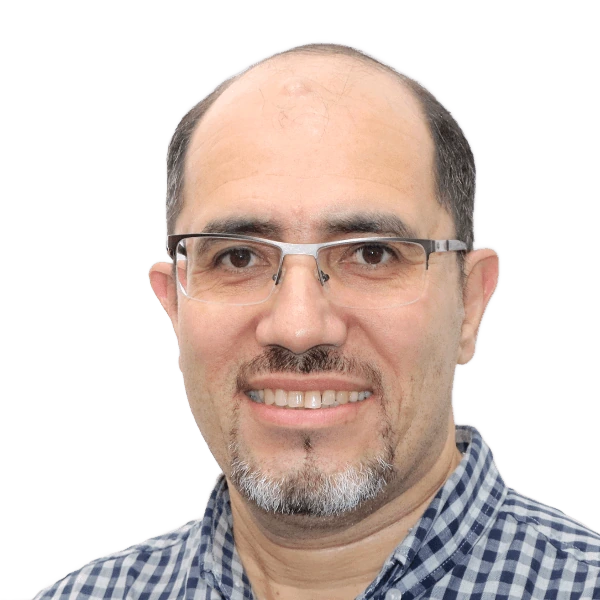
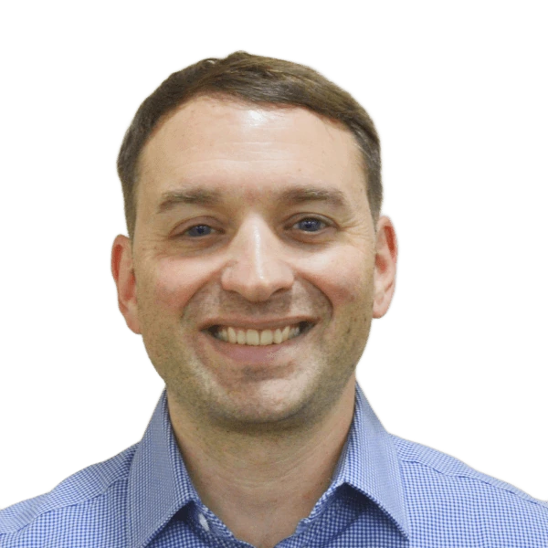
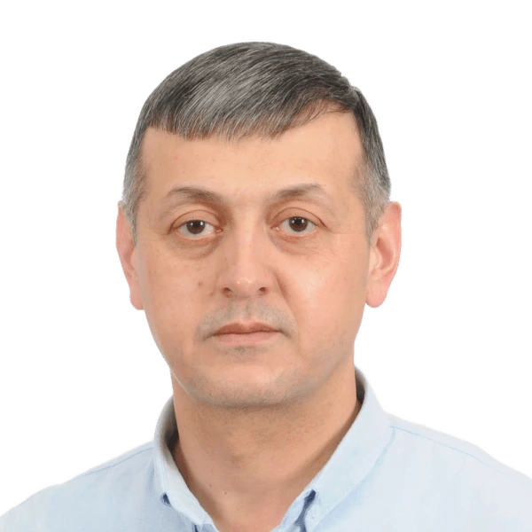
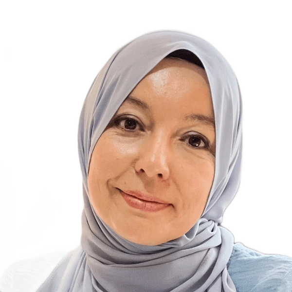
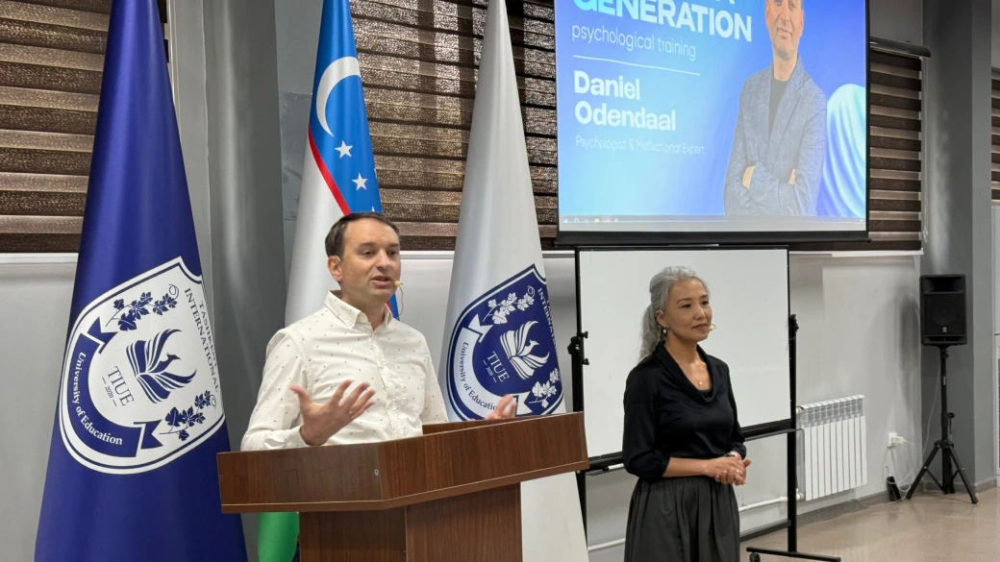
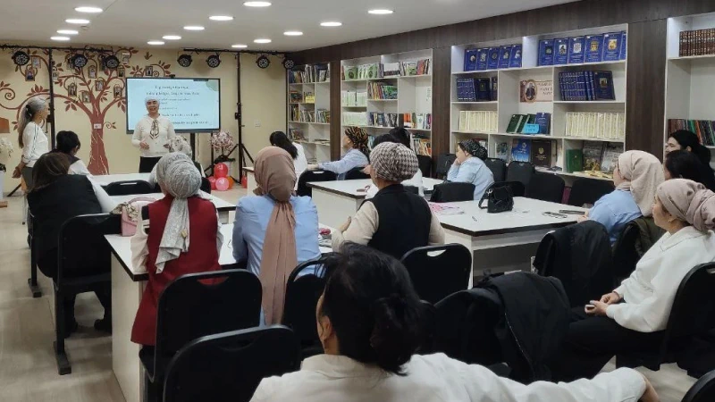
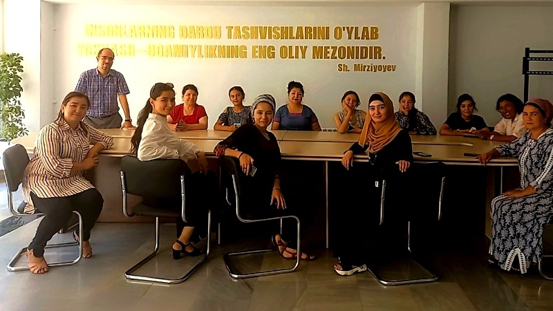

Доходы остаются на месте или начинают падать.
10+ лет опыта работы с малым и средним бизнесом
Обеспечьте стабильный рост и эффективность вашего бизнеса благодаря нашему опыту и профессионализму
Начните развитие вашего бизнеса с бесплатной консультации
Стремитесь вывести бизнес на новый уровень, но не знаете с чего начать?
Если у вас нет четкого плана, это может привести к серьёзным проблемам:
Вы теряете драгоценное время, пробуя стратегии, которые не дают результата.
Вместо оптимизации бизнес-процессов, вы погружаетесь в хаос и неуверенность.
Это ведет к бессонным ночам, стрессу и чувству подавленности. Мы понимаем, что вы не хотите этого для себя.
Наше решение
Sherikkon Consulting уже помог более 50 бизнесам найти четкий план для роста и стабильности доходов. Этот план сработает и для вас.
- Индивидуальный анализ ваших бизнес-процессов
- Разработка стратегии роста, адаптированной под ваши цели
- Практическая поддержка на каждом этапе внедрения
Результаты, которые вы получите
Увеличение доходов на 25% в первые 6 месяцев сотрудничества
Оптимизация бизнес-процессов, что сэкономит вам до 20 часов в неделю
Повышение эффективности команды через специализированные тренинги
Снижение уровня стресса и улучшение качества жизни владельца бизнеса
Бесплатная консультация от экспертов
Ваша выгода:
Комплексный анализ бизнеса
Разработка стратегии роста
Поддержка в реализации планов
+998 (90) 175 3420
Позвоните или оставьте номер телефона и мы с вами свяжемся
Получить бесплатную консультациюПартнёрство для вашего успеха
Мы предлагаем проверенные инструменты и богатый опыт, чтобы сопровождать ваш бизнес на пути к успеху.
Результаты
Консалтинг для малого и среднего бизнеса
Сила в единстве: наша команда




- Опыт
- Образование
- Страсть
Наша направленность
3 причины
Проекты компании


